Čergovrun, bežecký klub spod Čergova

Najlepšie pobehanie v širokom okolí. Veľa kopcov, lúk a výhľadov. Jednoducho Čergov
Preteky
Výsledky 2026 · termíny 2027 čoskoroNovinky
Všetky novinkyVýzvy
Celý rok, cez Stravu
Celoročná výzva
Zbieraj kilometre na trati.
Netreba dať celý hrebeň naraz. Každý kúsok trate Behu hrebeňom aj Umiraku, ktorý počas roka prebehneš, sa ti pripočíta.
Z aktivít porovnáme len trasu s traťami pretekov. Svoje kilometre vidíš iba ty.
Tvoj rok na tratiach ukážka
84,3 kmspolu na tratiach
Beh hrebeňom22,4 z 31,7 km
Čergovský umirak12,1 z 28,9 km
Strava klub Čergovrun
Koľko Minčolov máš v nohách?
Každý výškový meter sa ráta, aj ten v blate. Pripoj Stravu a spočítame ti stúpanie za celý rok v Minčoloch.
Čítame len stúpanie tvojich aktivít. Svoje Minčoly vidíš iba ty a Stravu môžeš kedykoľvek odpojiť.
1 157 m1 Minčol
7,6 Minčola1 Everest, 8 849 m
Tvoj rokpo pripojení Stravy